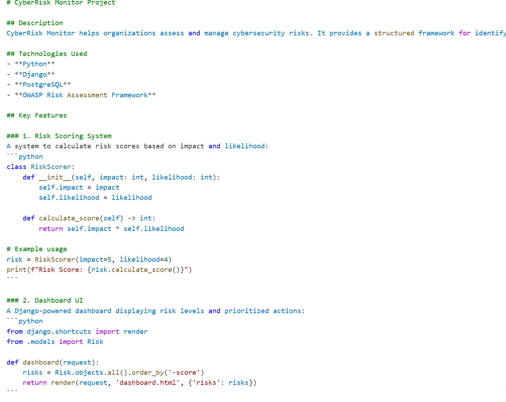
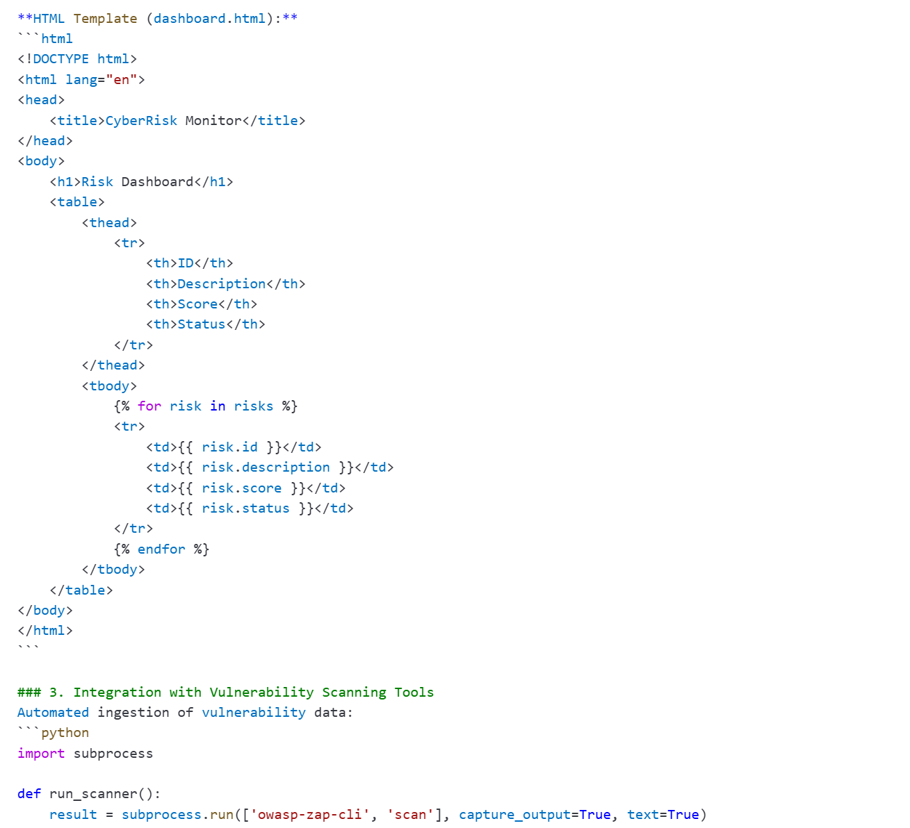
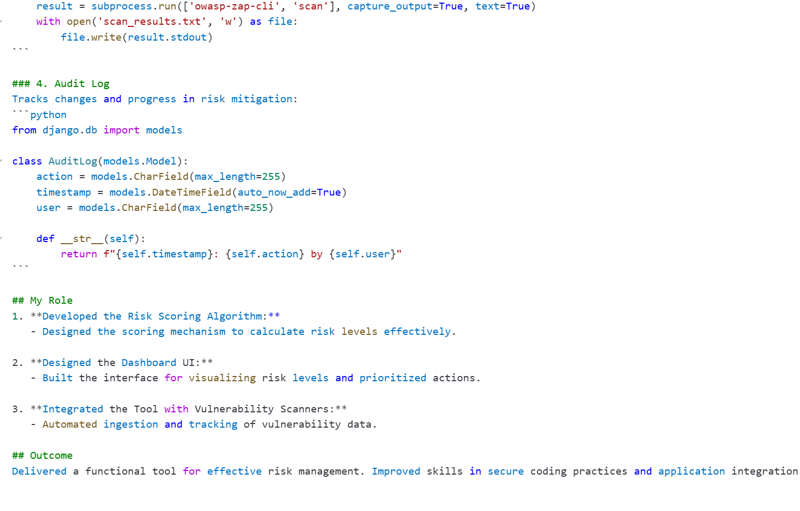
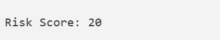
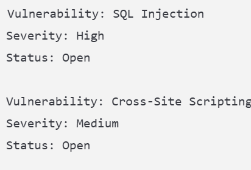
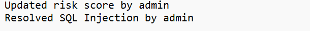

Description: CyberRisk Monitor helps organizations assess and manage cybersecurity risks. It provides a structured framework for identifying vulnerabilities, assessing impacts, and tracking mitigation strategies.
Technologies Used: Python, Django, PostgreSQL, OWASP Risk Assessment Framework
Key Features:
My Role: Developed the risk scoring algorithm, designed the dashboard UI, and integrated the tool with vulnerability scanners.
Outcome: Delivered a functional tool for effective risk management and improved skills in secure coding practices.
Below are visuals showcasing key features of the CyberRisk Monitor project:
Description: Demonstrates the calculation of risk scores based on impact and likelihood using the risk scoring algorithm.
Description: Displays the Django-powered dashboard UI with risk levels and prioritized actions.
Description: Shows a dynamic risk table generated from the database, displaying risk details and scores.
Description: Highlights the integration of OWASP ZAP for automated vulnerability scanning.
Description: Displays the audit log system tracking changes and mitigation progress.
Description: Shows sample vulnerability outputs and their statuses, such as SQL Injection and Cross-Site Scripting.